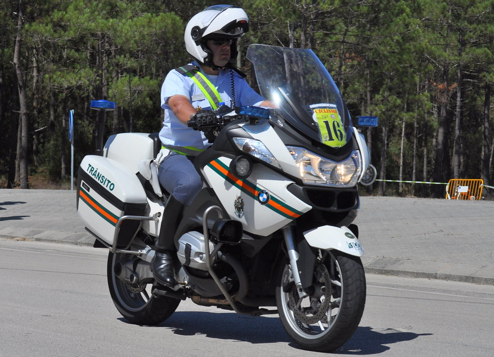

6 Técnicas de Abordagem no Trânsito
6.1 Introdução
A abordagem no trânsito constitui-se em uma das atividades mais sensíveis e relevantes do agente de trânsito, uma vez que envolve a relação direta entre poder público e cidadão. O êxito dessa ação depende de preparo técnico, postura profissional e observância às normas legais.
No Brasil, o Código de Trânsito Brasileiro (CTB – Lei nº 9.503/1997) e a Portaria SENATRAN nº 966/2022 estabelecem diretrizes para a formação e atuação de agentes. Em âmbito internacional, documentos como o Manual Global de Segurança Viária da Organização Mundial da Saúde (OMS, 2017) e os guias da UNECE (United Nations Economic Commission for Europe) ressaltam que a abordagem deve priorizar a segurança, a comunicação clara e a preservação da dignidade humana.
6.2 Guarda Civil: Espanha e Portugal
 |
 |
 |
6.3 Princípios Fundamentais da Abordagem
- Segurança: proteção da equipe, do condutor e dos demais usuários da via;
- Legalidade: todos os atos devem estar amparados pelo CTB, regulamentos locais e convenções internacionais;
- Clareza e Objetividade: mensagens curtas e diretas, evitando ambiguidades;
- Postura Educativa: caráter instrutivo e preventivo, priorizando a mudança de comportamento;
- Ética e Respeito: tratamento cordial, livre de preconceito, coerção desnecessária ou abuso de autoridade;
6.4 Planejamento da Ação
Antes de cada operação, o coordenador deve realizar:
- Briefing com a Equipe: distribuição de funções e definição da estratégia.
- Identificação de Parceiros: Polícia Militar, SAMU, Bombeiro, instituições Educativas, entre outros.
- Escolha do Local: baseado em critérios técnicos (fluxo, sinistralidade, riscos).
- Comunicação Unificada: definir linguagem padronizada para a campanha.
- Materiais de apoio: planilhas, formulários digitais, material educativo, Etilômetro.
6.5 Apresentação Pessoal
A imagem do agente reflete a credibilidade da instituição. Devem ser observados:
- Uniforme completo e em bom estado (padronização nacional);
- Uso de crachá visível;
- Higiene e aparência pessoal compatíveis com função pública;
- Homens é importante apresentar-se diariamente com a barba feita;
- Mulheres, recomenda-se o uso moderado de maquiagem e jóias/bijuterias, e não esquecer em prender cabelos longos;
- É indispensável o cuidado para Não Fumar e Ingerir Alcool, 12 horas antes da realização da ação;
- Postura corporal firme e atenta (evitar distrações, uso de celular ou conversas paralelas);
- Conduta exemplar: o agente é referência de comportamento seguro no trânsito;
6.6 Procedimentos de Abordagem Educativa
6.6.1 Incício da Abordagem
- Cumprimentar o condutor/passageiro com “bom dia”, “boa tarde” ou “boa noite”;
- Identificar-se como agente de trânsito;
- Manter distância segura do veículo;
- Evitar contato físico com o automóvel;
- Os membros da equipe(educação/saúde, etc) deverão posicionar-se às margens da via, sempre do lado do carona;
6.7 Comunicação Durante a Abordagem
- Linguagem respeitosa: tratar por “Senhor(a)”.
- Explicação clara sobre a razão da abordagem.
- Evitar tom repreensivo; priorizar sensibilização e orientação.
- Uso de material educativo quando cabível
6.8 Encerramento
- Agradecer pela colaboração;
- Fornecer instruções de continuidade (regularização, boas práticas, próximos passos);
- Elogiar condutas corretas observadas;
6.9 Procedimentos de Segurança
- O balizamento e ordem de parada é competência exclusiva do agente;
- Evitar aproximação em curvas, locais de baixa visibilidade ou risco de colisão;
- Comunicação constante entre a equipe por rádio ou sinais combinados;
- O coordenador é o porta-voz oficial para imprensa e mídia;